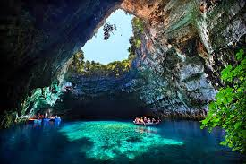

Top 7 danh lam thắng cảnh nổi tiếng ở Việt Nam
Việt Nam,mảnh đất hiền hòa với bao phong cảnh đến lạ thường, không chỉ là một mảnh đất hiền hòa,người dân hiền lành thân thiện, mà trên mảnh đất hình chữ S yêu thương này ó biết bao nhiêu danh lam thắng cảnh tuyệt đẹp.Bạn đã biết chưa?
1.Vịnh Hạ long

Vịnh Hạ Long là một trong những danh lam thắng cảnh đẹp nhất tại Việt Nam. Vịnh Hạ Long được UNESCO công nhận là một trong bảy kì quan thiên nhiên tuyệt vời nhất thế giới. Khi tới thăm Vịnh Hạ Long, các bạn sẽ được di chuyển bằng thuyền trên vịnh để ngắm nhìn các hòn đảo đá vôi và phiến thạch dáng hình độc đáo và hùng vĩ. Một số địa điểm nổi bật mà bạn không nên bỏ qua khi tới Hạ Long là hòn Gà Chọi, hòn Con Cóc, đảo Ngọc Vừng, đảo Ti Tốp, hang Sửng Sốt, động Thiên Cung và vịnh Bái Tử Long. Thành phố biển tươi đẹp này là một địa điểm lí tưởng dành cho các bạn yêu thích việc đi du lịch và khám phá thiên nhiên. Những địa điểm tham quan hấp dẫn khi du lịch Hạ Long: Vịnh Bái Tử Long, Vịnh Lan Hạ, Đảo Soi Sim, Đảo Tuần Châu, Bãi Cháy, Đảo Cô Tô, Đảo Mắt Rồng (Đảo Bái Đông), Đảo Quan Lạn, Bãi tắm Ba Trái Đào, Đảo Ti Tốp. Những hang động đẹp ở Vịnh Hạ Long: Hang Sửng Sốt, Hang Đầu Gỗ, Hang Trống và Hang Trinh Nữ, Hang Luồn, Hang Thiên Cảnh Sơn, Động Thiên Cung, Động Kim Quy. Những làng chài đẹp ven biển: Làng chài Cửa Vạn, Làng chài Vung Viêng, Làng chài Ba Hang, Những địa điểm du lịch tâm linh, Chùa Ba Vàng, Khu di tích Yên Tử, Chùa Cái Bầu
20 điểm du lịch Hạ Long
2. Hồ Hoàn Kiếm
Hồ Hoàn Kiếm gắn liền với lịch sử của đất nước ta khi vị vua Lý Thái Tổ mang trả gươm báu lại cho rùa thần. Hồ Hoàn Kiếm là biểu tượng khát khao hòa bình, đức văn tài võ trị của dân tộc Việt Nam. Do vậy, đã có rất nhiều văn nghệ sĩ đã lấy hình ảnh Hồ Gươm làm nền tảng cho các tác phẩm của mình. Diện tích hồ khoảng 12 hecta. Trước kia, hồ còn có các tên gọi là: hồ Lục Thủy, hồ Thủy Quân, hồ Tả Vọng và Hữu Vọng.
3. Sapa
Nằm ở phía Tây Bắc của Việt Nam, thị trấn Sa Pa ở độ cao 1.600 mét so với mực nước biển, cách thành phố Lào Cai 38 km và 376 km tính từ Hà Nội. Nhiệt độ trung bình quanh năm ở Sapa là 15 độ C, khí hậu luôn mát mẻ quanh năm. Vào mùa hạ, một ngày tại Sapa dường như có bốn mùa xoay quanh, sáng thì mang chút hơi ấm của mùa Xuân, trưa thì có nắng như mùa Hạ nhưng lại không quá gắt, chiều tới thì có thêm chút gió, sương rơi như mùa thu và vào tối là một màn đêm lạnh giá của mùa Đông. Đến với Sapa ngoài nhìn ngắm những đồi núi hung vĩ như tranh thì bạn còn được trực tiếp đến thăm các dân làng người dân tộc và tìm hiểu về nếp sống cũng như phong tục tập quán của họ. Đèo Trạm Côn hay Cổng Trời, Thác Bạc, Dãy núi Phan-xi-pang, ruộng bậc thang … đều là một trong số những nơi thu hút khách du lịch nhiều nhất.
Ăn gì ở Sapa?
Kinh nghiệm Sapa Trekking
4.Vườn Quốc Gia Phong Nha- Kẻ Bàng
Phong Nha – Kẻ Bàng là khu bảo tồn thiên nhiên đã được UNESCO chính thức công nhận. Nơi đây có hang Sơn Động – hang đá lớn nhất thế giới và khoảng 300 hang động khác. Bên trong hang Sơn Động là hồ nước ngầm nằm sâu 13m so với mặt đất cùng vô số thạch nhũ và băng đá. Ngoài ra còn phải kể đến hang Tiên Sơn, hang Thiên Đường. Khu vực này là một vùng đá vôi rộng tới 2.000 km vuông với thảm thực vật nhiệt đới và nhiều cây cổ thụ tới 500 tuổi.
5.Đảo Phú Quốc
Là hòn đảo lớn nhất trong số 22 đảo tại vùng vịnh Thái Lan, đảo Phú Quốc có diện tích 567 km² (56.700 ha), dài 49 km, địa hình thiên nhiên thoai thoải chạy từ bắc xuống nam với 99 ngọn núi đồi. Năm 2008, trang web Concierge.com (chuyên về du lịch tại Úc) đã công bố Bãi Dài Phú Quốc là 1 trong 13 bãi biển “hoang sơ và đẹp nhất” thế giới. Ngoài ra Phú Quốc còn là nơi sản xuất ra một loại nước mắm không chỉ nổi tiếng tại Việt Nam mà còn được khắp thế giới biết đến.
6.Nha Trang
Nha Trang là một thành phố ven biển và là trung tâm chính trị, kinh tế, văn hóa, khoa học kỹ thuật và du lịch của tỉnh Khánh Hòa, Việt Nam. Trước khi trở thành phần đất của Việt Nam, Nha Trang thuộc về Chiêm Thành. Các di tích của người Chăm vẫn còn tại nhiều nơi ở Nha Trang. Nha Trang được Thủ tướng chính phủ Việt Nam công nhận là đô thị loại 1 vào ngày 22 tháng 4 năm 2009. Đây là một trong các đô thị loại 1 trực thuộc tỉnh của Việt Nam. Nha Trang được mệnh danh là hòn ngọc của biển Đông, Viên ngọc xanh vì giá trị thiên nhiên, sắc đẹp cũng như khí hậu của nó.
Địa điểm du lịch Nha Trang
7.Chùa Một Cột
Nha Trang là một thành phố ven biển và là trung tâm chính trị, kinh tế, văn hóa, khoa học kỹ thuật và du lịch của tỉnh Khánh Hòa, Việt Nam. Trước khi trở thành phần đất của Việt Nam, Nha Trang thuộc về Chiêm Thành. Các di tích của người Chăm vẫn còn tại nhiều nơi ở Nha Trang. Nha Trang được Thủ tướng chính phủ Việt Nam công nhận là đô thị loại 1 vào ngày 22 tháng 4 năm 2009. Đây là một trong các đô thị loại 1 trực thuộc tỉnh của Việt Nam. Nha Trang được mệnh danh là hòn ngọc của biển Đông, Viên ngọc xanh vì giá trị thiên nhiên, sắc đẹp cũng như khí hậu của nó.